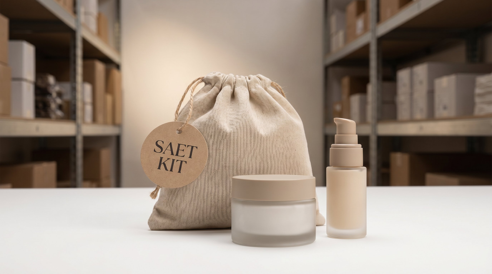

Bundling er en af de mest effektive maader at øge gennemsnitsordrevaerdien på i en webshop. Det er også en af de maader der hurtiest kan skabe lager-kompleksitet, naer det ikke er tænkt igennem. Bundter og kit-produkter er ikke bare et salgsvaerktoj, de er også et lager-management-sporgsmaal.
Gjoer det rigtigt, og bundling øger din avance, reducerer pr.-ordre-omkostningerne og giver kunden en bedre oplevelse. Gør det forkert, og du ender med halvfaerdige kits på lageret, komponenter der er bindet op i bundter der ikke saelger og en WMS der ikke kan haandtere den kompleksitet.
Her gennemgår vi baade potentialet og risikoen.
👉 SmartPack understotter bundle-haandtering og virtuelle kits pÃ¥ lageret. Se hvordan
To typer bundling: praeassembleret og virtuelt
Det er vigtigt at skelne mellem de to modeller, fordi de har fundamentalt forskellige lager-implikationer:
- Praeassembleret bundle. Du samler komponenterne på lageret på forhnd og opretter bundlet som et selvstaendigt SKU med sin egen hylde-location. Fordel: hurtigere plukning og bedre kontrol på salgspris. Ulempe: du binder lagerbeholdning i et konfigureret produkt du ikke kan oplossse uden ekstra arbejde.
- Virtuelt bundle (kit). Bundlet eksisterer kun som et salgsprodukt på webshopen. På lageret er komponenterne stadig individuelle SKUs. Naer en bundle-ordre kommer ind, plukkes komponenterne separat og samles i pakken ved afsendelse. Fordel: mere fleksibelt lager. Ulempe: kræver, at dit WMS kan eksplodere en bundle til komponenter og plukkeinstruktioner.
De fleste startende webshops bruger praeassemblerede bundter fordi det er nemmere at styre manuelt. De fleste skalerbare webshops bruger virtuelle kits fordi det giver mere fleksibilitet naer sortimentet vaekster.
Hvad bundling gør ved din avance
Bundling kan forbedre avancen på to maader:
- Krydssubsidiering. Par et hoejmargin-produkt med et lavmargin-produkt. Den samlede avance på bundlet kan være hojere end gennemsnittet af de to produkter solgt separat, naer kunden er villig til at betale mere for den samlede oplevelse end for summen af delene.
- Reduced pr.-ordre-omkostning. En pakke med to produkter koster kun lidt mere at plukke og sende end en pakke med eet produkt. Lageromkostning pr. ordre og fragtomkostning pr. ordre falder relativt til den samlede ordrevaerdi. Din avanceprocent stiger.
Et eksempel: du saelger produkt A for 99 kr. med 40% avance (40 kr.) og produkt B for 149 kr. med 55% avance (82 kr.). Separat: to ordrer, to forsendelser, to gange lageromkostning. Bundlet til 229 kr. (10% rabat): een forsendelse, lavere pr.-ordre-omkostning, samlet avance 82 kr. mod 122 kr. ved separate køb. Lavere avance per ordre i kroner, men du sender kun eet pakke og spare fragtomkostning.
Lagerudfordringerne ved bundling
Bundling introducerer kompleksitet på lageret. Her er de primaere udfordringer:
- Komponent-synkronisering. Et virtuelt kit kan kun saelges naer alle komponenter er på lager. Dit system skal haandtere dette automatisk: vise bundlet som udsolgt naer blot een komponent er tom. Hjaandteres det manuelt, risikerer du oversalg.
- Lagerplanlaegging for kits. Bundter saelger typisk i andre seasonale mønstre end enkelt-produkter. Du skal proenoosticere efterspoorgslen på kit-niveau, ikke bare komponent-niveau, og sikre at alle komponenter er tilgaengelige samtidig.
- Praeassembleret: bunden kapacitet. Naer du praeassemblerer, binder du lager der ikke kan bruges til andet. Saelger bundlet langsomt, sidder du med kapital og plads der er laast. Saet et max på praeassemblerings-behoeldning og reassembler naer det ikke saelger.
- SKU-proliferation. Hvert bundle er et nyt SKU. Mange varianter og kombinationer af bundter kan quickly skabe en SKU-liste der er svaer at haandtere. Hold det enkelt: max 5-10 aktive bundter ad gangen naer du starter.
Hvornår bundling er den rigtige strategi
Bundling virker bedst naer:
- Produkterne naturligt komplementerer hinanden og kunden køber dem alligevel (fx shampoo og conditioner, kamera og minnekort, vin og ost).
- Begge komponenter er stabilt på lager og har ens salgshastighed, saa det ene sjaldent er tomt naer det andet er på lager.
- Din webshop-platform og dit WMS understotter bundle-haandtering saa det ikke kræver manuel indgriben pr. ordre.
- Bundlet giver kunden en opfattet besparelse eller bekvemmelighed der motiverer til at vælge det frem for at købe enkelt-produkter separat.
Bundling er typisk ikke den rigtige løsning naer du vil af med langsomt-saelgende varer. Kunder der køber et bundle med et produkt de ikke ville købe alene, har hojere returrate og lavere tilfredshed. Det er den type bundling der skaber returomkostninger i stedet for avance.
Implementering: fra ide til lager
Naer du vil implementere bundling, er disse trin praksis: vaelg 2-3 naturlige produktpar med supplerende salgshastighed og god samlet avance. Opsaet dem som virtuelle kits i dit system. Test salget i 30 dage. Maael: konverteringsrate på bundle-siden, gennemsnitsordrevaerdi, returrate og avance pr. ordre. Udvid herefter baseret på data, ikke mavefornemmelse.